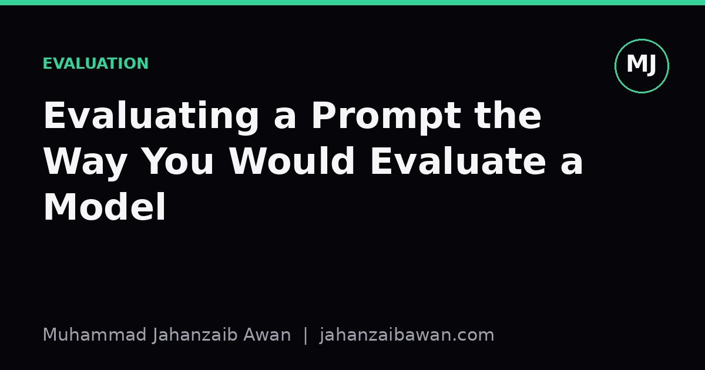

Evaluating a Prompt the Way You Would Evaluate a Model
Prompts are not magic spells; they are configurations that deserve the same rigour as a model architecture or a training run.

Why prompts deserve the same scepticism as models
When I train a classifier, I would never trust a number that comes from eyeballing five predictions. I split data, hold out a test set, pick a metric before I look at results, and compare against a baseline. Yet when people write prompts for large language models, this discipline often disappears. A prompt gets tweaked until three example outputs look good, and that is declared success. The prompt is treated as a clever bit of writing rather than as a configuration with measurable effects on behaviour.
This is a mistake, because a prompt is functionally similar to a hyperparameter or even a small model component. It maps inputs to outputs through a fixed procedure, it can overfit to the examples you happened to test it on, and it can fail silently on inputs you did not think to try. The only honest way to know whether prompt A is better than prompt B is to evaluate them the way you would evaluate two model checkpoints: on a held-out set, with a fixed metric, against a sensible baseline.
The reason this matters in practice is that prompts are cheap to iterate on, which makes it tempting to iterate directly against the very examples you are judging quality with. That is leakage in a different costume. If you keep adjusting wording until it nails the ten cases you are staring at, you have not improved the prompt in general; you have fitted it to those ten cases, and you will not know until it meets case eleven.
Building the protocol: splits, metrics, and baselines
Start by separating your examples into a development set and a held-out test set, exactly as you would for a model. The development set is where you are allowed to read outputs, notice failure patterns, and rewrite instructions. The held-out set is touched only when you think you are finished, and once you have looked at it, that version of the prompt is done; further tweaking means you need a fresh held-out set or you are back to leakage. In practice, even a modest split, say forty examples for development and sixty for held-out testing, is far better than zero separation, because it forces a discipline of not peeking.
Next, fix a scoring method before you run anything. If the task has a clear correct answer, such as extracting a date or classifying a ticket type, use exact match or a simple rubric with two or three criteria scored independently, for example correctness, completeness, and format compliance. If the task is open-ended, such as summarisation, write a short rubric with concrete anchors: a score of two means the summary omits a key fact, a score of one means it is accurate but misses nuance, a score of zero means it is wrong or irrelevant. Vague instructions like rate the quality from one to five produce noisy, unreplicable numbers because two reviewers, or the same reviewer on two days, will disagree.
Always include a baseline. The most useful one is often the simplest prompt you can write, a plain instruction with no few-shot examples and no elaborate persona. Suppose that baseline scores 58 percent on your rubric across the held-out set. Your carefully engineered prompt, with role-play framing and five few-shot examples, scores 64 percent. That six-point gap tells you the extra complexity earned its keep. If instead the elaborate prompt scores 59 percent, you have learned that the complexity is decoration, not substance, and you can ship the simpler version with more confidence and lower token cost.
A worked example: comparing two prompts honestly
Imagine you are building a prompt to classify customer support messages into billing, technical, or account categories. You collect one hundred real messages, labelled by hand, and split them sixty for development and forty for held-out testing. On the development set, you try a zero-shot prompt and a few-shot prompt with six examples. Reading the outputs, the few-shot version seems to handle ambiguous messages better, so you refine its wording and lock it.
Now you run both locked prompts, zero-shot and few-shot, once each on the forty held-out messages, scoring strictly by exact category match. Suppose zero-shot gets 31 out of 40 correct, 77.5 percent, and few-shot gets 35 out of 40, 87.5 percent. That ten-point difference, measured on data neither prompt was tuned against, is a result you can trust and report. Compare that to a situation where you had only tested on the same six examples you used to write the few-shot prompt: there you might have seen six out of six correct and concluded falsely that the prompt was essentially perfect.
It is also worth testing robustness within this same protocol, not as an afterthought. Take the winning few-shot prompt and rerun it on the held-out set with minor paraphrases of the same messages, or with the message order shuffled if the prompt includes multiple messages at once. If accuracy drops from 87.5 percent to 70 percent under paraphrasing, you have discovered that the prompt is brittle, latching onto surface wording rather than meaning, and that finding is only visible because you treated evaluation as a repeatable measurement rather than a one-off check.
The practical takeaway
Treat every prompt change as a hypothesis that needs testing, not a tweak that speaks for itself. Keep a held-out set you do not peek at during iteration, fix your rubric or metric in advance, and always compare against a plain baseline so you know whether complexity is actually earning its cost in accuracy. Rerun the final candidate once, cleanly, on unseen data before you trust the number.
None of this requires heavy infrastructure. A spreadsheet with inputs, two prompt outputs, and a scoring column is enough to start. What matters is the habit: separate exploration from confirmation, write the scoring rule down before you see results, and never let the examples you tuned on also be the examples you judge success by. That single discipline, borrowed directly from ordinary model evaluation, is what turns prompt engineering from folklore into something you can actually trust and reproduce.